Unit 5
STATES OF MATTER
STATES OF MATTER

Objectives
After studying this unit you will be able to
“The snowflake falls, yet lays not long Its feath’ry grasp on Mother Earth Ere Sun returns it to the vapors Whence it came, Or to waters tumbling down the rocky slope. Rod O’ Connor”
Introduction
In previous units we have learnt about the properties related to single particle of matter, such as atomic size, ionization enthalpy, electronic charge density, molecular shape and polarity, etc. Most of the observable characteristics of chemical systems with which we are familiar represent bulk properties of matter, i.e., the properties associated with a collection of a large number of atoms, ions or molecules. For example, an individual molecule of a liquid does not boil but the bulk boils. Collection of water molecules have wetting properties; individual molecules do not wet. Water can exist as ice, which is a solid; it can exist as liquid; or it can exist in the gaseous state as water vapour or steam. Physical properties of ice, water and steam are very different. In all the three states of water chemical composition of water remains the same i.e., H2O. Characteristics of the three states of water depend on the energies of molecules and on the manner in which water molecules aggregate. Same is true for other substances also.
Chemical properties of a substance do not change with the change of its physical state; but rate of chemical reactions do depend upon the physical state. Many times in calculations while dealing with data of experiments we require knowledge of the state of matter. Therefore, it becomes necessary for a chemist to know the physical laws which govern the behaviour of matter in different states. In this unit, we will learn more about these three physical states of matter particularly liquid and gaseous states. To begin with, it is necessary to understand the nature of intermolecular forces, molecular interactions and effect of thermal energy on the motion of particles because a balance between these determines the state of a substance.
5.1 Intermolecular Forces
Intermolecular forces are the forces of attraction and repulsion between interacting particles (atoms and molecules). This term does not include the electrostatic forces that exist between the two oppositely charged ions and the forces that hold atoms of a molecule together i.e., covalent bonds.
Attractive intermolecular forces are known as van der Waals forces, in honour of Dutch scientist Johannes van der Waals (1837-1923), who explained the deviation of real gases from the ideal behaviour through these forces. We will learn about this later in this unit. van der Waals forces vary considerably in magnitude and include dispersion forces or London forces, dipole-dipole forces, and dipole-induced dipole forces. A particularly strong type of dipole-dipole interaction is hydrogen bonding. Only a few elements can participate in hydrogen bond formation, therefore it is treated as a separate category. We have already learnt about this interaction in Unit 4.
At this point, it is important to note that attractive forces between an ion and a dipole are known as ion-dipole forces and these are not van der Waals forces. We will now learn about different types of van der Waals forces.
5.1.1 Dispersion Forces or London Forces
Atoms and nonpolar molecules are electrically symmetrical and have no dipole moment because their electronic charge cloud is symmetrically distributed. But a dipole may develop momentarily even in such atoms and molecules. This can be understood as follows. Suppose we have two atoms ‘A’ and ‘B’ in the close vicinity of each other (Fig. 5.1a). It may so happen that momentarily electronic charge distribution in one of the atoms, say ‘A’, becomes unsymmetrical i.e., the charge cloud is more on one side than the other (Fig. 5.1 b and c). This results in the development of instantaneous dipole on the atom ‘A’ for a very short time. This instantaneous or transient dipole distorts the electron density of the other atom ‘B’, which is close to it and as a consequence a dipole is induced in the atom ‘B’.
The temporary dipoles of atom ‘A’ and ‘B’ attract each other. Similarly temporary dipoles are induced in molecules also. This force of attraction was first proposed by the German physicist Fritz London,

Fig. 5.1 Dispersion forces or London forces between atoms.
and for this reason force of attraction between two temporary dipoles is known as London force. Another name for this force is dispersion force. These forces are always attractive and interaction energy is inversely proportional to the sixth power of the distance between two interacting particles (i.e., 1/r6 where r is the distance between two particles). These forces are important only at short distances (~500 pm) and their magnitude depends on the polarisability of the particle.
5.1.2 Dipole - Dipole Forces
Dipole-dipole forces act between the molecules possessing permanent dipole. Ends of the dipoles possess “partial charges” and these charges are shown by Greek letter delta (δ). Partial charges are always less than the unit electronic charge (1.6×10–19 C). The polar molecules interact with neighbouring molecules. Fig 5.2 (a) shows electron cloud distribution in the dipole of hydrogen chloride and Fig. 5.2 (b) shows dipole-dipole interaction between two HCl molecules. This interaction is stronger than the London forces but is weaker than ion-ion interaction because only partial charges are involved. The attractive force decreases with the increase of distance between the dipoles. As in the above case here also, the interaction energy is inversely proportional to distance between polar molecules. Dipole-dipole interaction energy between stationary polar molecules (as in solids) is proportional to 1/r3 and that between rotating polar molecules is proportional

Fig. 5.2 (a) Distribution of electron cloud in HCl – a polar molecule, (b) Dipole-dipole interaction between two HCl molecules
to 1/r6, where r is the distance between polar molecules. Besides dipole-dipole interaction, polar molecules can interact by London forces also. Thus cumulative effect is that the total of intermolecular forces in polar molecules increase.
5.1.3 Dipole–Induced Dipole Forces
This type of attractive forces operate between the polar molecules having permanent dipole and the molecules lacking permanent dipole. Permanent dipole of the polar molecule induces dipole on the electrically neutral molecule by deforming its electronic cloud (Fig. 5.3). Thus an induced dipole is developed in the other molecule. In this case also interaction energy is proportional to 1/r6 where r is the distance between two molecules. Induced dipole moment depends upon the dipole moment present in the permanent dipole and the polarisability of the electrically neutral molecule. We have already learnt in Unit 4 that molecules of larger size can be easily polarized. High polarisability increases the strength of attractive interactions.

Fig. 5.3 Dipole - induced dipole interaction between permanent dipole and induced dipole
In this case also cumulative effect of dispersion forces and dipole-induced dipole interactions exists.
5.1.4 Hydrogen bond
As already mentioned in section (5.1); this is special case of dipole-dipole interaction. We have already learnt about this in Unit 4. This is found in the molecules in which highly polar N–H, O–H or H–F bonds are present. Although hydrogen bonding is regarded as being limited to N, O and F; but species such as 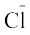 may also participate in hydrogen bonding. Energy of hydrogen bond varies between 10 to 100 kJ mol–1. This is quite a significant amount of energy; therefore, hydrogen bonds are powerful force in determining the structure and properties of many compounds, for example proteins and nucleic acids. Strength of the hydrogen bond is determined by the coulombic interaction between the lone-pair electrons of the electronegative atom of one molecule and the hydrogen atom of other molecule. Following diagram shows the formation of hydrogen bond.
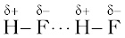
Intermolecular forces discussed so far are all attractive. Molecules also exert repulsive forces on one another. When two molecules are brought into close contact with each other, the repulsion between the electron clouds and that between the nuclei of two molecules comes into play. Magnitude of the repulsion rises very rapidly as the distance separating the molecules decreases. This is the reason that liquids and solids are hard to compress. In these states molecules are already in close contact; therefore they resist further compression; as that would result in the increase of repulsive interactions.
5.2 Thermal Energy
Thermal energy is the energy of a body arising from motion of its atoms or molecules. It is directly proportional to the temperature of the substance. It is the measure of average kinetic energy of the particles of the matter and is thus responsible for movement of particles. This movement of particles is called thermal motion.
5.3 Intermolecular Forces vs Thermal Interactions
We have already learnt that intermolecular forces tend to keep the molecules together but thermal energy of the molecules tends to keep them apart. Three states of matter are the result of balance between intermolecular forces and the thermal energy of the molecules.
When molecular interactions are very weak, molecules do not cling together to make liquid or solid unless thermal energy is reduced by lowering the temperature. Gases do not liquify on compression only, although molecules come very close to each other and intermolecular forces operate to the maximum. However, when thermal energy of molecules is reduced by lowering the temperature; the gases can be very easily liquified. Predominance of thermal energy and the molecular interaction energy of a substance in three states is depicted as follows :

We have already learnt the cause for the existence of the three states of matter. Now we will learn more about gaseous and liquid states and the laws which govern the behaviour of matter in these states. We shall deal with the solid state in class XII.
5.4 The Gaseous State
This is the simplest state of matter. Throughout our life we remain immersed in the ocean of air which is a mixture of gases. We spend our life in the lowermost layer of the atmosphere called troposphere, which is held to the surface of the earth by gravitational force. The thin layer of atmosphere is vital to our life. It shields us from harmful radiations and contains substances like dioxygen, dinitrogen, carbon dioxide, water vapour, etc.
Let us now focus our attention on the behaviour of substances which exist in the gaseous state under normal conditions of temperature and pressure. A look at the periodic table shows that only eleven elements exist as gases under normal conditions (Fig 5.4).

Fig. 5.4 Eleven elements that exist as gases
The gaseous state is characterized by the following physical properties.
Simplicity of gases is due to the fact that the forces of interaction between their molecules are negligible. Their behaviour is governed by same general laws, which were discovered as a result of their experimental studies. These laws are relationships between measurable properties of gases. Some of these properties like pressure, volume, temperature and mass are very important because relationships between these variables describe state of the gas. Interdependence of these variables leads to the formulation of gas laws. In the next section we will learn about gas laws.
5.5 The Gas Laws
The gas laws which we will study now are the result of research carried on for several centuries on the physical properties of gases. The first reliable measurement on properties of gases was made by Anglo-Irish scientist Robert Boyle in 1662. The law which he formulated is known as Boyle’s Law. Later on attempts to fly in air with the help of hot air balloons motivated Jaccques Charles and Joseph Lewis Gay Lussac to discover additional gas laws. Contribution from Avogadro and others provided lot of information about gaseous state.
5.5.1 Boyle’s Law (Pressure - Volume Relationship)
On the basis of his experiments, Robert Boyle reached to the conclusion that at constant temperature, the pressure of a fixed amount (i.e., number of moles n) of gas varies inversely with its volume. This is known as Boyle’s law. Mathematically, it can be written as
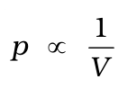 ( at constant T and n) (5.1)
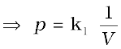 (5.2)
where k1 is the proportionality constant. The value of constant k1 depends upon the amount of the gas, temperature of the gas and the units in which p and V are expressed.
On rearranging equation (5.2) we obtain
pV = k1 (5.3)
It means that at constant temperature, product of pressure and volume of a fixed amount of gas is constant.
If a fixed amount of gas at constant temperature T occupying volume V1 at pressure p1 undergoes expansion, so that volume becomes V2 and pressure becomes p2, then according to Boyle’s law :
p1V1 = p2V2= constant (5.4)
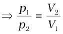 (5.5)
Figure 5.5 shows two conventional ways of graphically presenting Boyle’s law. Fig. 5.5 (a) is the graph of equation (5.3) at different temperatures. The value of k1 for each curve is different because for a given mass of gas, it varies only with temperature. Each curve corresponds to a different constant temperature and is known as an isotherm (constant temperature plot). Higher curves correspond to higher temperature. It should be noted that volume of the gas doubles if pressure is halved. Table 5.1 gives effect of pressure on volume of 0.09 mol of CO2 at 300 K.

Fig. 5.5(a) Graph of pressure, p vs. Volume, V of a gas at different temperatures.

Fig. 5.5 (b) Graph of pressure of a gas, p vs. 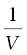
Fig 5.5 (b) represents the graph between p and 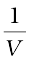. It is a straight line passing through origin. However at high pressures, gases deviate from Boyle’s law and under such conditions a straight line is not obtained in the graph.
Experiments of Boyle, in a quantitative manner prove that gases are highly compressible because when a given mass of a gas is compressed, the same number of molecules occupy a smaller space. This means that gases become denser at high pressure. A relationship can be obtained between density and pressure of a gas by using Boyle’s law :
By definition, density ‘d’ is related to the mass ‘m’ and the volume ‘V’ by the relation 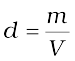. If we put value of V in this equation from Boyle’s law equation, we obtain the relationship.
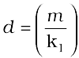 p = k′ p
This shows that at a constant temperature, pressure is directly proportional to the density of a fixed mass of the gas.
Table 5.1 Effect of Pressure on the Volume of 0.09 mol CO2 Gas at 300 K.
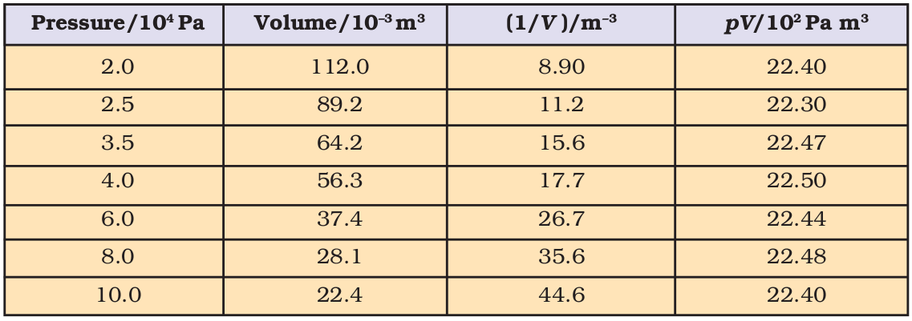
Problem 5.1
A balloon is filled with hydrogen at room temperature. It will burst if pressure exceeds 0.2 bar. If at 1 bar pressure the gas occupies 2.27 L volume, upto what volume can the balloon be expanded ?
Solution
According to Boyle’s Law p1V1 = p2V2
If p1 is 1 bar, V1 will be 2.27 L
If p2 = 0.2 bar, then 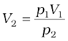
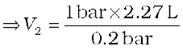=11.35 L
Since balloon bursts at 0.2 bar pressure, the volume of balloon should be less than 11.35 L.
5.5.2 Charles’ Law (Temperature - Volume Relationship)
Charles and Gay Lussac performed several experiments on gases independently to improve upon hot air balloon technology. Their investigations showed that for a fixed mass of a gas at constant pressure, volume of a gas increases on increasing temperature and decreases on cooling. They found that for each degree rise in temperature, volume of a gas increases by 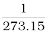 of the original volume of the gas at 0 °C. Thus if volumes of the gas at 0 °C and at t °C are V0 and Vt respectively, then
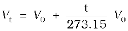
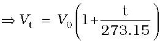
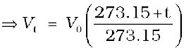 (5.6)
At this stage, we define a new scale of temperature such that t °C on new scale is given by T = 273.15 + t and 0 °C will be given by T0 = 273.15. This new temperature scale is called the Kelvin temperature scale or Absolute temperature scale.
Thus 0°C on the celsius scale is equal to 273.15 K at the absolute scale. Note that degree sign is not used while writing the temperature in absolute temperature scale, i.e., Kelvin scale. Kelvin scale of temperature is also called Thermodynamic scale of temperature and is used in all scientific works.
Thus we add 273 (more precisely 273.15) to the celsius temperature to obtain temperature at Kelvin scale.
If we write Tt = 273.15 + t and T0 = 273.15
in the equation (5.6) we obtain the relationship
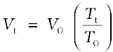
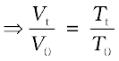 (5.7)
Thus we can write a general equation as follows.
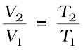 (5.8)
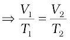
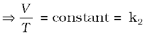 (5.9)
Thus V = k2 T (5.10)
The value of constant k2 is determined by the pressure of the gas, its amount and the units in which volume V is expressed.
Equation (5.10) is the mathematical expression for Charles’ law, which states that pressure remaining constant, the volume of a fixed mass of a gas is directly proportional to its absolute temperature. Charles found that for all gases, at any given pressure, graph of volume vs temperature (in celsius) is a straight line and on extending to zero volume, each line intercepts the temperature axis at – 273.15 °C. Slopes of lines obtained at different pressure are different but at zero volume all the lines meet the temperature axis at – 273.15 °C (Fig. 5.6).
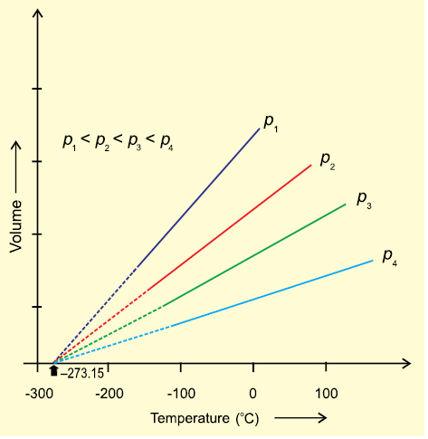
Fig. 5.6 Volume vs Temperature ( °C) graph
Each line of the volume vs temperature graph is called isobar.
Observations of Charles can be interpreted if we put the value of t in equation (5.6) as – 273.15 °C. We can see that the volume of the gas at – 273.15 °C will be zero. This means that gas will not exist. In fact all the gases get liquified before this temperature is reached. The lowest hypothetical or imaginary temperature at which gases are supposed to occupy zero volume is called Absolute zero.
All gases obey Charles’ law at very low pressures and high temperatures.
Problem 5.2
On a ship sailing in pacific ocean where temperature is 23.4 °C , a balloon is filled with 2 L air. What will be the volume of the balloon when the ship reaches Indian ocean, where temperature is 26.1°C ?
Solution
V1 = 2 L T2 = 26.1 + 273
T1 = (23.4 + 273) K = 299.1 K = 296.4 K
From Charles law
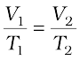
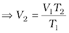
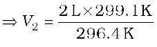
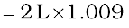
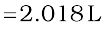
5.5.3 Gay Lussac’s Law (Pressure- Temperature Relationship)
Pressure in well inflated tyres of automobiles is almost constant, but on a hot summer day this increases considerably and tyre may burst if pressure is not adjusted properly. During winters, on a cold morning one may find the pressure in the tyres of a vehicle decreased considerably. The mathematical relationship between pressure and temperature was given by Joseph Gay Lussac and is known as Gay Lussac’s law. It states that at constant volume, pressure of a fixed amount of a gas varies directly with the temperature. Mathematically,
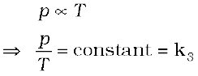
This relationship can be derived from Boyle’s law and Charles’ Law. Pressure vs temperature (Kelvin) graph at constant molar volume is shown in Fig. 5.7. Each line of this graph is called isochore.

Fig. 5.7 Pressure vs temperature (K) graph (Isochores) of a gas.
5.5.4 Avogadro Law (Volume - Amount Relationship)
In 1811 Italian scientist Amedeo Avogadro tried to combine conclusions of Dalton’s atomic theory and Gay Lussac’s law of combining volumes (Unit 1) which is now known as Avogadro law. It states that equal volumes of all gases under the same conditions of temperature and pressure contain equal number of molecules.
This means that as long as the temperature and pressure remain constant, the volume depends upon number of molecules of the gas or in other words amount of the gas. Mathematically we can write
V  n where n is the number of moles of the gas.
n where n is the number of moles of the gas.
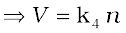 (5.11)
The number of molecules in one mole of a gas has been determined to be 6.022 ×1023 and is known as Avogadro constant. You will find that this is the same number which we came across while discussing definition of a ‘mole’ (Unit 1).
Since volume of a gas is directly proportional to the number of moles; one mole of each gas at standard temperature and pressure (STP)* will have same volume. Standard temperature and pressure means 273.15 K (0°C) temperature and 1 bar (i.e., exactly 105 pascal) pressure. These values approximate freezing temperature of water and atmospheric pressure at sea level. At STP molar volume of an ideal gas or a combination of ideal gases is 22.71098 L mol–1.
Molar volume of some gases is given in (Table 5.2).
Table 5.2 Molar volume in litres per mole of some gases at 273.15 K and 1 bar (STP).

Number of moles of a gas can be calculated as follows
n =  (5.12)
(5.12)
Where m = mass of the gas under investigation and M = molar mass
Thus,
V = k4 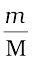 (5.13)
Equation (5.13) can be rearranged as follows :
M = k4 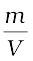 = k4d (5.14)
Here ‘d’ is the density of the gas. We can conclude from equation (5.14) that the density of a gas is directly proportional to its molar mass.
* The previous standard is still often used, and applies to all chemistry data more than decade old. In this definition STP denotes the same temperature of 0°C (273.15 K), but a slightly higher pressure of 1 atm (101.325 kPa). One mole of any gas of a combination of gases occupies 22.413996 L of volume at STP.
Standard ambient temperature and pressure (SATP), conditions are also used in some scientific works. SATP conditions means 298.15 K and 1 bar (i.e., exactly 105 Pa). At SATP (1 bar and 298.15 K), the molar volume of an ideal gas is 24.789 L mol–1.
A gas that follows Boyle’s law, Charles’ law and Avogadro law strictly is called an ideal gas. Such a gas is hypothetical. It is assumed that intermolecular forces are not present between the molecules of an ideal gas. Real gases follow these laws only under certain specific conditions when forces of interaction are practically negligible. In all other situations these deviate from ideal behaviour. You will learn about the deviations later in this unit.
5.6 Ideal Gas Equation
The three laws which we have learnt till now can be combined together in a single equation which is known as ideal gas equation.
At constant T and n; V 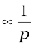 Boyle’s Law
At constant p and n; V  T Charles’ Law
T Charles’ Law
At constant p and T ; V  n Avogadro Law
n Avogadro Law
Thus,
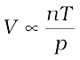 (5.15)
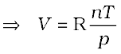 (5.16)
where R is proportionality constant. On rearranging the equation (5.16) we obtain
pV = n RT (5.17)
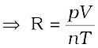 (5.18)
R is called gas constant. It is same for all gases. Therefore it is also called Universal Gas Constant. Equation (5.17) is called ideal gas equation.
Equation (5.18) shows that the value of R depends upon units in which p, V and T are measured. If three variables in this equation are known, fourth can be calculated. From this equation we can see that at constant temperature and pressure n moles of any gas will have the same volume because 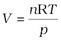 and n,R,T and p are constant. This equation will be applicable to any gas, under those conditions when behaviour of the gas approaches ideal behaviour. Volume of one mole of an ideal gas under STP conditions (273.15 K and 1 bar pressure) is 22.710981 L mol–1. Value of R for one mole of an ideal gas can be calculated under these conditions as follows :
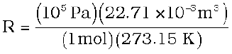
= 8.314 Pa m3 K–1 mol–1
= 8.314 × 10–2 bar L K–1 mol–1
= 8.314 J K–1 mol–1
At STP conditions used earlier (0 °C and 1 atm pressure), value of R is 8.20578 × 10–2 L atm K–1 mol–1.
Ideal gas equation is a relation between four variables and it describes the state of any gas, therefore, it is also called equation of state.
Let us now go back to the ideal gas equation. This is the relationship for the simultaneous variation of the variables. If temperature, volume and pressure of a fixed amount of gas vary from T1, V1 and p1 to T2, V2 and p2 then we can write
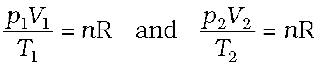
 (5.19)
(5.19)
Equation (5.19) is a very useful equation. If out of six, values of five variables are known, the value of unknown variable can be calculated from the equation (5.19). This equation is also known as Combined gas law.
Problem 5.3
At 25°C and 760 mm of Hg pressure a gas occupies 600 mL volume. What will be its pressure at a height where temperature is 10°C and volume of the gas is 640 mL.
Solution
p1 = 760 mm Hg, V1= 600 mL
T1 = 25 + 273 = 298 K
V2 = 640 mL and T2 = 10 + 273 = 283 K
According to Combined gas law
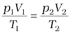
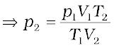
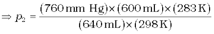
= 676.6 mm Hg
5.6.1 Density and Molar Mass of a Gaseous Substance
Ideal gas equation can be rearranged as follows:
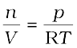
Replacing n by  , we get
, we get
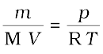 (5.20)
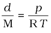 (where d is the density) (5.21)
On rearranging equation (5.21) we get the relationship for calculating molar mass of a gas.
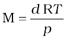 (5.22)
5.6.2 Dalton’s Law of Partial Pressures
The law was formulated by John Dalton in 1801. It states that the total pressure exerted by the mixture of non-reactive gases is equal to the sum of the partial pressures of individual gases i.e., the pressures which these gases would exert if they were enclosed separately in the same volume and under the same conditions of temperature. In a mixture of gases, the pressure exerted by the individual gas is called partial pressure. Mathematically,
pTotal = p1+p2+p3+......(at constant T, V) (5.23)
where pTotal is the total pressure exerted by the mixture of gases and p1, p2 , p3 etc. are partial pressures of gases.
Gases are generally collected over water and therefore are moist. Pressure of dry gas can be calculated by subtracting vapour pressure of water from the total pressure of the moist gas which contains water vapours also. Pressure exerted by saturated water vapour is called aqueous tension. Aqueous tension of water at different temperatures is given in Table 5.3.
pDry gas = pTotal – Aqueous tension (5.24)
Partial pressure in terms of mole fraction
Suppose at the temperature T, three gases, enclosed in the volume V, exert partial pressure p1, p2 and p3 respectively. then,
 (5.25)
(5.25)
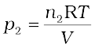 (5.26)
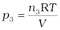 (5.27)
where n1 n2 and n3 are number of moles of these gases. Thus, expression for total pressure will be
pTotal = p1 + p2 + p3
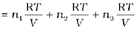
= (n1 + n2 + n3) 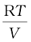 (5.28)
On dividing p1 by ptotal we get

where n = n1+n2+n3
x1 is called mole fraction of first gas.
Thus, p1 = x1 ptotal
Similarly for other two gases we can write
p2 = x2 ptotal and p3 = x3 ptotal
Thus a general equation can be written as
pi = xi ptotal (5.29)
where pi and xi are partial pressure and mole fraction of ith gas respectively. If total pressure of a mixture of gases is known, the equation (5.29) can be used to find out pressure exerted by individual gases.
Problem 5.4
A neon-dioxygen mixture contains
70.6 g dioxygen and 167.5 g neon. If pressure of the mixture of gases in the cylinder is 25 bar. What is the partial pressure of dioxygen and neon in the mixture ?
Number of moles of dioxygen
= 2.21 mol
Number of moles of neon
= 8.375 mol
Mole fraction of dioxygen 
= 0.21
Mole fraction of neon
= 0.79
Alternatively,
mole fraction of neon = 1– 0.21 = 0.79
Partial pressure = mole fraction × of a gas total pressure
⇒ Partial pressure = 0.21 × (25 bar)
of oxygen = 5.25 bar
Partial pressure = 0.79 × (25 bar)
of neon = 19.75 bar
5.7 Kinetic Molecular Theory of Gases
So far we have learnt the laws (e.g., Boyle’s law, Charles’ law etc.) which are concise statements of experimental facts observed in the laboratory by the scientists. Conducting careful experiments is an important aspect of scientific method and it tells us how the particular system is behaving under different conditions. However, once the experimental facts are established, a scientist is curious to know why the system is behaving in that way. For example, gas laws help us to predict that pressure increases when we compress gases but we would like to know what happens at molecular level when a gas is compressed ? A theory is constructed to answer such questions. A theory is a model (i.e., a mental picture) that enables us to better understand our observations. The theory that attempts to elucidate the behaviour of gases is known as kinetic molecular theory.
Assumptions or postulates of the kinetic-molecular theory of gases are given below. These postulates are related to atoms and molecules which cannot be seen, hence it is said to provide a microscopic model of gases.
Kinetic theory of gases allows us to derive theoretically, all the gas laws studied in the previous sections. Calculations and predictions based on kinetic theory of gases agree very well with the experimental observations and thus establish the correctness of this model.
5.8 Behaviour of real gases: Deviation from ideal gas behaviour
Our theoritical model of gases corresponds very well with the experimental observations. Difficulty arises when we try to test how far the relation pV = nRT reproduce actual pressure-volume-temperature relationship of gases. To test this point we plot pV vs p plot of gases because at constant temperature, pV will be constant (Boyle’s law) and pV vs p graph at all pressures will be a straight line parallel to x-axis. Fig. 5.8 shows such a plot constructed from actual data for several gases at 273 K.
Fig. 5.8 Plot of pV vs p for real gas and ideal gas
It can be seen easily that at constant temperature pV vs p plot for real gases is not a straight line. There is a significant deviation from ideal behaviour. Two types of curves are seen.In the curves for dihydrogen and helium, as the pressure increases the value of pV also increases. The second type of plot is seen in the case of other gases like carbon monoxide and methane. In these plots first there is a negative deviation from ideal behaviour, the pV value decreases with increase in pressure and reaches to a minimum value characteristic of a gas. After that pV value starts increasing. The curve then crosses the line for ideal gas and after that shows positive deviation continuously. It is thus, found that real gases do not follow ideal gas equation perfectly under all conditions.
Deviation from ideal behaviour also becomes apparent when pressure vs volume plot is drawn. The pressure vs volume plot of experimental data (real gas) and that theoretically calculated from Boyle’s law (ideal gas) should coincide. Fig 5.9 shows these plots. It is apparent that at very high pressure the measured volume is more than the calculated volume. At low pressures, measured and calculated volumes approach each other.

Fig. 5.9 Plot of pressure vs volume for real gas and ideal gas
It is found that real gases do not follow, Boyle’s law, Charles law and Avogadro law perfectly under all conditions. Now two questions arise.
(i) Why do gases deviate from the ideal behaviour?
(ii) What are the conditions under which gases deviate from ideality?
We get the answer of the first question if we look into postulates of kinetic theory once again. We find that two assumptions of the kinetic theory do not hold good. These are
(a) There is no force of attraction between the molecules of a gas.
(b) Volume of the molecules of a gas is negligibly small in comparison to the space occupied by the gas.
If assumption (a) is correct, the gas will never liquify. However, we know that gases do liquify when cooled and compressed. Also, liquids formed are very difficult to compress. This means that forces of repulsion are powerful enough and prevent squashing of molecules in tiny volume. If assumption (b) is correct, the pressure vs volume graph of experimental data (real gas) and that theoritically calculated from Boyles law (ideal gas) should coincide.
Real gases show deviations from ideal gas law because molecules interact with each other. At high pressures molecules of gases are very close to each other. Molecular interactions start operating. At high pressure, molecules do not strike the walls of the container with full impact because these are dragged back by other molecules due to molecular attractive forces. This affects the pressure exerted by the molecules on the walls of the container. Thus, the pressure exerted by the gas is lower than the pressure exerted by the ideal gas.
(5.30)
Here, a is a constant.
Repulsive forces also become significant. Repulsive interactions are short-range interactions and are significant when molecules are almost in contact. This is the situation at high pressure. The repulsive forces cause the molecules to behave as small but impenetrable spheres. The volume occupied by the molecules also becomes significant because instead of moving in volume V, these are now restricted to volume (V–nb) where nb is approximately the total volume occupied by the molecules themselves. Here, b is a constant. Having taken into account the corrections for pressure and volume, we can rewrite equation (5.17) as
(5.31)
Equation (5.31) is known as van der Waals equation. In this equation n is number of moles of the gas. Constants a and b are called van der Waals constants and their value depends on the characteristic of a gas. Value of ‘a’ is measure of magnitude of intermolecular attractive forces within the gas and is independent of temperature and pressure.
Also, at very low temperature, intermolecular forces become significant. As the molecules travel with low average speed, these can be captured by one another due to attractive forces. Real gases show ideal behaviour when conditions of temperature and pressure are such that the intermolecular forces are practically negligible. The real gases show ideal behaviour when pressure approaches zero.
The deviation from ideal behaviour can be measured in terms of compressibility factor Z, which is the ratio of product pV and nRT. Mathematically
(5.32)
For ideal gas Z = 1 at all temperatures and pressures because pV = n RT. The graph of Z vs p will be a straight line parallel to pressure axis (Fig. 5.10). For gases which deviate from ideality, value of Z deviates from unity. At very low pressures all gases shown have Z ≈1 and behave as ideal gas. At high pressure all the gases have Z > 1. These are more difficult to compress. At intermediate pressures, most gases have Z < 1. Thus gases show ideal behaviour when the volume occupied is large so that the volume of the molecules can be neglected in comparison to it. In other words, the behaviour of the gas becomes more ideal when pressure is very low. Upto what pressure a gas will follow the ideal gas law, depends upon nature of the gas and its temperature. The temperature at which a real gas obeys ideal gas law over an appreciable range of pressure is called Boyle temperature or Boyle point. Boyle point of a gas depends upon its nature. Above their Boyle point, real gases show positive deviations from ideality and Z values are greater than one.

Fig. 5.10 Variation of compressibility factor for some gases
The forces of attraction between the molecules are very feeble. Below Boyle temperature real gases first show decrease in Z value with increasing pressure, which reaches a minimum value. On further increase in pressure, the value of Z increases continuously. Above explanation shows that at low pressure and high temperature gases show ideal behaviour. These conditions are different for different gases.
More insight is obtained in the significance of Z if we note the following derivation
(5.33)
If the gas shows ideal behaviour then
. On putting this value of in equation (5.33) we have
(5.34)
From equation (5.34) we can see that compressibility factor is the ratio of actual molar volume of a gas to the molar volume of it, if it were an ideal gas at that temperature and pressure.
In the following sections we will see that it is not possible to distinguish between gaseous state and liquid state and that liquids may be considered as continuation of gas phase into a region of small volumes and very high molecular attraction. We will also see how we can use isotherms of gases for predicting the conditions for liquifaction of gases.
5.9 Liquifaction of Gases
First complete data on pressure - volume - temperature relations of a substance in both gaseous and liquid state was obtained by Thomas Andrews on carbon dioxide. He plotted isotherms of carbon dioxide at various temperatures (Fig. 5.11). Later on it was found that real gases behave in the same manner as carbon dioxide. Andrews noticed that at high temperatures isotherms look like that of an ideal gas and the gas cannot be liquified even at very high pressure. As the temperature is lowered, shape of the curve changes and data shows considerable deviation from ideal behaviour.
Fig. 5.11 Isotherms of carbon dioxide at various temperatures
At 30.98 °C carbon dioxide remains gas upto 73 atmospheric pressure. (Point E in Fig. 5.11). At 73 atmospheric pressure, liquid carbon dioxide appears for the first time. The temperature 30.98 °C is called critical temperature (TC) of carbon dioxide. This is the highest temperature at which liquid carbon dioxide is observed. Above this temperature it is gas. Volume of one mole of the gas at critical temperature is called critical volume (VC) and pressure at this temperature is called critical pressure (pC). The critical temperature, pressure and volume are called critical constants. Further increase in pressure simply compresses the liquid carbon dioxide and the curve represents the compressibility of the liquid. The steep line represents the isotherm of liquid. Even a slight compression results in steep rise in pressure indicating very low compressibility of the liquid. Below 30.98 °C, the behaviour of the gas on compression is quite different. At 21.5 °C, carbon dioxide remains as a gas only upto point B. At point B, liquid of a particular volume appears. Further compression does not change the pressure. Liquid and gaseous carbon dioxide coexist and further application of pressure results in the condensation of more gas until the point C is reached. At point C, all the gas has been condensed and further application of pressure merely compresses the liquid as shown by steep line. A slight compression from volume V2 to V3 results in steep rise in pressure from p2 to p3 (Fig. 5.11). Below 30.98 °C (critical temperature) each curve shows the similar trend. Only length of the horizontal line increases at lower temperatures. At critical point horizontal portion of the isotherm merges into one point. Thus we see that a point like A in the Fig. 5.11 represents gaseous state. A point like D represents liquid state and a point under the dome shaped area represents existence of liquid and gaseous carbon dioxide in equilibrium. All the gases upon compression at constant temperature (isothermal compression) show the same behaviour as shown by carbon dioxide. Also above discussion shows that gases should be cooled below their critical temperature for liquification. Critical temperature of a gas is highest temperature at which liquifaction of the gas first occurs. Liquifaction of so called permanent gases (i.e., gases which show continuous positive deviation in Z value) requires cooling as well as considerable compression. Compression brings the molecules in close vicinity and cooling slows down the movement of molecules therefore, intermolecular interactions may hold the closely and slowly moving molecules together and the gas liquifies.
It is possible to change a gas into liquid or a liquid into gas by a process in which always a single phase is present. For example in Fig. 5.11 we can move from point A to F vertically by increasing the temperature, then we can reach the point G by compressing the gas at the constant temperature along this isotherm (isotherm at 31.1°C). The pressure will increase. Now we can move vertically down towards D by lowering the temperature. As soon as we cross the point H on the critical isotherm we get liquid. We end up with liquid but in this series of changes we do not pass through two-phase region. If process is carried out at the critical temperature, substance always remains in one phase.
Thus there is continuity between the gaseous and liquid state. The term fluid is used for either a liquid or a gas to recognise this continuity. Thus a liquid can be viewed as a very dense gas. Liquid and gas can be distinguished only when the fluid is below its critical temperature and its pressure and volume lie under the dome, since in that situation liquid and gas are in equilibrium and a surface separating the two phases is visible. In the absence of this surface there is no fundamental way of distinguishing between two states. At critical temperature, liquid passes into gaseous state imperceptibly and continuously; the surface separating two phases disappears (Section 5.10.1). A gas below the critical temperature can be liquified by applying pressure, and is called vapour of the substance. Carbon dioxide gas below its critical temperature is called carbon dioxide vapour. Critical constants for some common substances are given in Table 5.4.
Table 5.4 Critical Constants for Some Substances
Problem 5.5
Gases possess characteristic critical temperature which depends upon the magnitude of intermolecular forces between the gas particles. Critical temperatures of ammonia and carbon dioxide are 405.5 K and 304.10 K respectively. Which of these gases will liquify first when you start cooling from 500 K to their critical temperature ?
Solution
Ammonia will liquify first because its critical temperature will be reached first. Liquifaction of CO2 will require more cooling.
5.10 Liquid State
Intermolecular forces are stronger in liquid state than in gaseous state. Molecules in liquids are so close that there is very little empty space between them and under normal conditions liquids are denser than gases.
Molecules of liquids are held together by attractive intermolecular forces. Liquids have definite volume because molecules do not separate from each other. However, molecules of liquids can move past one another freely, therefore, liquids can flow, can be poured and can assume the shape of the container in which these are stored. In the following sections we will look into some of the physical properties of the liquids such as vapour pressure, surface tension and viscosity.
5.10.1 Vapour Pressure
If an evacuated container is partially filled with a liquid, a portion of liquid evaporates to fill the remaining volume of the container with vapour. Initially the liquid evaporates and pressure exerted by vapours on the walls of the container (vapour pressure) increases. After some time it becomes constant, an equilibrium is established between liquid phase and vapour phase. Vapour pressure at this stage is known as equilibrium vapour pressure or saturated vapour pressure.. Since process of vapourisation is temperature dependent; the temperature must be mentioned while reporting the vapour pressure of a liquid.
When a liquid is heated in an open vessel, the liquid vapourises from the surface. At the temperature at which vapour pressure of the liquid becomes equal to the external pressure, vapourisation can occur throughout the bulk of the liquid and vapours expand freely into the surroundings. The condition of free vapourisation throughout the liquid is called boiling. The temperature at which vapour pressure of liquid is equal to the external pressure is called boiling temperature at that pressure. Vapour pressure of some common liquids at various temperatures is given in (Fig. 5.12). At 1 atm pressure boiling temperature is called normal boiling point. If pressure is 1 bar then the boiling point is called standard boiling point of the liquid. Standard boiling point of the liquid is slightly lower than the normal boiling point because 1 bar pressure is slightly less than 1 atm pressure. The normal boiling point of water is 100 °C (373 K), its standard boiling point is 99.6 °C (372.6 K).
At high altitudes atmospheric pressure is low. Therefore liquids at high altitudes boil at lower temperatures in comparison to that at sea level. Since water boils at low temperature on hills, the pressure cooker is used for cooking food. In hospitals surgical instruments are sterilized in autoclaves in which boiling point of water is increased by increasing the pressure above the atmospheric pressure by using a weight covering the vent.
Fig. 5.12 Vapour pressure vs temperature curve of some common liquids.
Boiling does not occur when liquid is heated in a closed vessel. On heating continuously vapour pressure increases. At first a clear boundary is visible between liquid and vapour phase because liquid is more dense than vapour. As the temperature increases more and more molecules go to vapour phase and density of vapours rises. At the same time liquid becomes less dense. It expands because molecules move apart. When density of liquid and vapours becomes the same; the clear boundary between liquid and vapours disappears. This temperature is called critical temperature about which we have already discussed in section 5.9.
5.10.2 Surface Tension
It is well known fact that liquids assume the shape of the container. Why is it then small drops of mercury form spherical bead instead of spreading on the surface. Why do particles of soil at the bottom of river remain separated but they stick together when taken out ? Why does a liquid rise (or fall) in a thin capillary as soon as the capillary touches the surface of the liquid ? All these phenomena are caused due to the characteristic property of liquids, called surface tension. A molecule in the bulk of liquid experiences equal intermolecular forces from all sides. The molecule, therefore does not experience any net force. But for the molecule on the surface of liquid, net attractive force is towards the interior of the liquid (Fig. 5.13), due to the molecules below it. Since there are no molecules above it.
Fig. 5.13 Forces acting on a molecule on liquid surface and on a molecule inside the liquid
Liquids tend to minimize their surface area. The molecules on the surface experience a net downward force and have more energy than the molecules in the bulk, which do not experience any net force. Therefore, liquids tend to have minimum number of molecules at their surface. If surface of the liquid is increased by pulling a molecule from the bulk, attractive forces will have to be overcome. This will require expenditure of energy. The energy required to increase the surface area of the liquid by one unit is defined as surface energy. Its dimensions are J m–2. Surface tension is defined as the force acting per unit length perpendicular to the line drawn on the surface of liquid. It is denoted by Greek letter γ (Gamma). It has dimensions of kg s–2 and in SI unit it is expressed as N m–1. The lowest energy state of the liquid will be when surface area is minimum. Spherical shape satisfies this condition, that is why mercury drops are spherical in shape. This is the reason that sharp glass edges are heated for making them smooth. On heating, the glass melts and the surface of the liquid tends to take the rounded shape at the edges, which makes the edges smooth. This is called fire polishing of glass.
Liquid tends to rise (or fall) in the capillary because of surface tension. Liquids wet the things because they spread across their surfaces as thin film. Moist soil grains are pulled together because surface area of thin film of water is reduced. It is surface tension which gives stretching property to the surface of a liquid. On flat surface, droplets are slightly flattened by the effect of gravity; but in the gravity free environments drops are perfectly spherical.
The magnitude of surface tension of a liquid depends on the attractive forces between the molecules. When the attractive forces are large, the surface tension is large. Increase in temperature increases the kinetic energy of the molecules and effectiveness of intermolecular attraction decreases, so surface tension decreases as the temperature is raised.
5.10.3 Viscosity
It is one of the characteristic properties of liquids. Viscosity is a measure of resistance to flow which arises due to the internal friction between layers of fluid as they slip past one another while liquid flows. Strong intermolecular forces between molecules hold them together and resist movement of layers past one another.
When a liquid flows over a fixed surface, the layer of molecules in the immediate contact of surface is stationary. The velocity of upper layers increases as the distance of layers from the fixed layer increases. This type of flow in which there is a regular gradation of velocity in passing from one layer to the next is called laminar flow. If we choose any layer in the flowing liquid (Fig.5.14), the layer above it accelerates its flow and the layer below this retards its flow.
Fig. 5.14 Gradation of velocity in the laminar flow
If the velocity of the layer at a distance dz is changed by a value du then velocity gradient is given by the amount  . A force is required to maintain the flow of layers. This force is proportional to the area of contact of layers and velocity gradient i.e.
. A force is required to maintain the flow of layers. This force is proportional to the area of contact of layers and velocity gradient i.e.
(A is the area of contact)
(where, is velocity gradient; the change in velocity with distance)
‘ ’ is proportionality constant and is called coefficient of viscosity. Viscosity coefficient is the force when velocity gradient is unity and the area of contact is unit area. Thus ‘’ is measure of viscosity. SI unit of viscosity coefficient is 1 newton second per square metre (N s m–2) = pascal second (Pa s = 1kg m–1s–1). In cgs system the unit of coefficient of viscosity is poise (named after great scientist Jean Louise Poiseuille).
’ is proportionality constant and is called coefficient of viscosity. Viscosity coefficient is the force when velocity gradient is unity and the area of contact is unit area. Thus ‘’ is measure of viscosity. SI unit of viscosity coefficient is 1 newton second per square metre (N s m–2) = pascal second (Pa s = 1kg m–1s–1). In cgs system the unit of coefficient of viscosity is poise (named after great scientist Jean Louise Poiseuille).
1 poise = 1 g cm–1s–1 = 10–1kg m–1s–1
Greater the viscosity, the more slowly the liquid flows. Hydrogen bonding and van der Waals forces are strong enough to cause high viscosity. Glass is an extremely viscous liquid. It is so viscous that many of its properties resemble solids. However, property of flow of glass can be experienced by measuring the thickness of windowpanes of old buildings. These become thicker at the bottom than at the top.
Viscosity of liquids decreases as the temperature rises because at high temperature molecules have high kinetic energy and can overcome the intermolecular forces to slip past one another between the layers.
SUMMARY
Intermolecular forces operate between the particles of matter. These forces differ from pure electrostatic forces that exist between two oppositely charged ions. Also, these do not include forces that hold atoms of a covalent molecule together through covalent bond. Competition between thermal energy and intermolecular interactions determines the state of matter. “Bulk” properties of matter such as behaviour of gases, characteristics of solids and liquids and change of state depend upon energy of constituent particles and the type of interaction between them. Chemical properties of a substance do not change with change of state, but the reactivity depends upon the physical state.
Forces of interaction between gas molecules are negligible and are almost independent of their chemical nature. Interdependence of some observable properties namely pressure, volume, temperature and mass leads to different gas laws obtained from experimental studies on gases. Boyle’s law states that under isothermal condition, pressure of a fixed amount of a gas is inversely proportional to its volume. Charles’ law is a relationship between volume and absolute temperature under isobaric condition. It states that volume of a fixed amount of gas is directly proportional to its absolute temperature . If state of a gas is represented by p1, V1 and T1 and it changes to state at p2, V2 and T2, then relationship between these two states is given by combined gas law according to which . Any one of the variables of this gas can be found out if other five variables are known. Avogadro law states that equal volumes of all gases under same conditions of temperature and pressure contain equal number of molecules. Dalton’s law of partial pressure states that total pressure exerted by a mixture of non-reacting gases is equal to the sum of partial pressures exerted by them. Thus p = p1+p2+p3+ ... . Relationship between pressure, volume, temperature and number of moles of a gas describes its state and is called equation of state of the gas. Equation of state for ideal gas is pV=nRT, where R is a gas constant and its value depends upon units chosen for pressure, volume and temperature.
At high pressure and low temperature intermolecular forces start operating strongly between the molecules of gases because they come close to each other. Under suitable temperature and pressure conditions gases can be liquified. Liquids may be considered as continuation of gas phase into a region of small volume and very strong molecular attractions. Some properties of liquids e.g., surface tension and viscosity are due to strong intermolecular attractive forces.
EXERCISES
5.1 What will be the minimum pressure required to compress 500 dm3 of air at 1 bar to 200 dm3 at 30°C?
5.2 A vessel of 120 mL capacity contains a certain amount of gas at 35 °C and 1.2 bar pressure. The gas is transferred to another vessel of volume 180 mL at 35 °C. What would be its pressure?
5.3 Using the equation of state pV=nRT; show that at a given temperature density of a gas is proportional to gas pressure p.
5.4 At 0°C, the density of a certain oxide of a gas at 2 bar is same as that of dinitrogen at 5 bar. What is the molecular mass of the oxide?
5.5 Pressure of 1 g of an ideal gas A at 27 °C is found to be 2 bar. When 2 g of another ideal gas B is introduced in the same flask at same temperature the pressure becomes 3 bar. Find a relationship between their molecular masses.
5.6 The drain cleaner, Drainex contains small bits of aluminum which react with caustic soda to produce dihydrogen. What volume of dihydrogen at 20 °C and one bar will be released when 0.15g of aluminum reacts?
5.7 What will be the pressure exerted by a mixture of 3.2 g of methane and 4.4 g of carbon dioxide contained in a 9 dm3 flask at 27 °C ?
5.8 What will be the pressure of the gaseous mixture when 0.5 L of H2 at 0.8 bar and 2.0 L of dioxygen at 0.7 bar are introduced in a 1L vessel at 27°C?
5.9 Density of a gas is found to be 5.46 g/dm3 at 27 °C at 2 bar pressure. What will be its density at STP?
5.10 34.05 mL of phosphorus vapour weighs 0.0625 g at 546 °C and 0.1 bar pressure. What is the molar mass of phosphorus?
5.11 A student forgot to add the reaction mixture to the round bottomed flask at 27 °C but instead he/she placed the flask on the flame. After a lapse of time, he realized his mistake, and using a pyrometer he found the temperature of the flask was 477 °C. What fraction of air would have been expelled out?
5.12 Calculate the temperature of 4.0 mol of a gas occupying 5 dm3 at 3.32 bar. (R = 0.083 bar dm3 K–1 mol–1).
5.13 Calculate the total number of electrons present in 1.4 g of dinitrogen gas.
5.14 How much time would it take to distribute one Avogadro number of wheat grains, if 1010 grains are distributed each second ?
5.15 Calculate the total pressure in a mixture of 8 g of dioxygen and 4 g of dihydrogen confined in a vessel of 1 dm3 at 27°C. R = 0.083 bar dm3 K–1 mol–1.
5.16 Pay load is defined as the difference between the mass of displaced air and the mass of the balloon. Calculate the pay load when a balloon of radius 10 m, mass 100 kg is filled with helium at 1.66 bar at 27°C. (Density of air = 1.2 kg m–3 and R = 0.083 bar dm3 K–1 mol–1).
5.17 Calculate the volume occupied by 8.8 g of CO2 at 31.1°C and 1 bar pressure.
R = 0.083 bar L K–1 mol–1.
5.18 2.9 g of a gas at 95 °C occupied the same volume as 0.184 g of dihydrogen at 17 °C, at the same pressure. What is the molar mass of the gas?
5.19 A mixture of dihydrogen and dioxygen at one bar pressure contains 20% by weight of dihydrogen. Calculate the partial pressure of dihydrogen.
5.20 What would be the SI unit for the quantity pV 2T 2/n ?
5.21 In terms of Charles’ law explain why –273 °C is the lowest possible temperature.
5.22 Critical temperature for carbon dioxide and methane are 31.1 °C and –81.9 °C respectively. Which of these has stronger intermolecular forces and why?
5.23 Explain the physical significance of van der Waals parameters.